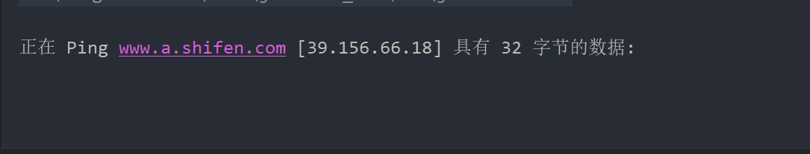

JAVA当中对于文件的处理都是通过IO流进行操作的
一些IO流的API
FileOutputStream 写入流，我们用该流可以写入内容到文件当中
FileInputStream 读取流
ObjectOutputStream 该流可以将一个对象写出，或者读取一个对象到程序中，也就是执行了序列化和反序列化操作。
ObjectInputStream 反序列化并打印数据
JAVA反序列化过程 首先我们要明白，Java的序列化与反序列化的过程是如何产生的，我们可以编写如下代码：
1 2 3 4 5 6 7 8 9 10 11 12 13 14 15 16 17 18 19 20 21 22 23 24 import java.io.*;public class demo1 public static void main (String[] args) throws Exception String obj = "ls " ; FileOutputStream fos = new FileOutputStream("aa.ser" ); ObjectOutputStream os = new ObjectOutputStream(fos); os.writeObject(obj); os.close(); FileInputStream fis = new FileInputStream("aa.ser" ); ObjectInputStream ois = new ObjectInputStream(fis); String obj2 = (String)ois.readObject(); System.out.println(obj2); ois.close(); } }
通过这串代码，我们将数据ls传入到了aa.ser当中，并且将其重新释放了出来。我们成功通过写入序列化文件并将其成功返回。
实现Serializable和Externalizable接口的类的对象才能被序列化。故我们写一个例子
1 2 3 4 5 6 7 8 9 10 11 12 13 14 15 16 17 18 19 20 21 22 23 24 25 26 27 28 29 30 31 32 33 34 35 36 37 38 39 40 41 42 43 44 45 46 47 48 49 50 51 52 53 54 55 56 57 58 59 60 61 62 63 64 65 66 67 68 import java.io.*;import java.text.MessageFormat;public class Demo2 public static void SerializePerson () throws IOException Person person = new Person(); person.setAge(19 ); person.setName("sakani" ); ObjectOutputStream oos = new ObjectOutputStream(new FileOutputStream("Demo2.txt" )); oos.writeObject(person); } public static Person UnSerializePerson () throws IOException, ClassNotFoundException FileInputStream fileInputStream = new FileInputStream(new File("Demo2.txt" )); ObjectInputStream objectInputStream = new ObjectInputStream(fileInputStream); Person person2 = (Person)objectInputStream.readObject(); System.out.println(person2.getAge()); return person2; } public static void main (String[] args) throws IOException, ClassNotFoundException SerializePerson(); Person person2 = UnSerializePerson(); System.out.println(MessageFormat.format("name={0},age={1},sex={2}" ,person2.getName(),person2.getAge())); } } class Person implements Serializable private String name; private int age; private boolean sex; public Person () } public String getName () return name; } public void setName (String name) this .name = name; } public int getAge () return age; } public void setAge (int age) this .age = age; } public boolean isSex () return sex; } public void setSex (boolean sex) this .sex = sex; } }
Java命令执行函数 1.java.lang.Runtime 1 2 3 4 5 6 7 8 9 10 11 12 13 14 15 16 17 18 19 20 21 22 23 24 25 26 27 28 29 30 31 32 33 34 35 36 37 38 39 40 import org.junit.Test;import java.io.IOException;import java.io.InputStream;public class RuntimeTest @Test public void test1 () throws IOException Runtime runtime = Runtime.getRuntime(); runtime.exec(new String[]{"cmd" ,"/c" ,"calc" ,"&" ,"notepad" }); } @Test public void test2 () throws IOException Runtime runtime = Runtime.getRuntime(); runtime.exec("cmd /c calc & notepad" ); } @Test public void test3 () throws IOException Runtime runtime = Runtime.getRuntime(); runtime.exec("cmd.exe /k calc & notepad" ); } @Test public void test4 () throws IOException Runtime runtime = Runtime.getRuntime(); Process start = runtime.exec("ping sakani.top" ); InputStream inputStream = start.getInputStream(); byte [] res = new byte [1024 ]; inputStream.read(res); System.out.println(new String(res,"gbk" )); } } class Test1 }
注意，第一种方式告诉我们可以用数组来传入命令，第二种则是告诉字符串的方式，第四种则是意味着我们可以执行反弹shell,但是用该方法的时候我只得到了一条ping的数据，如图所示，所以我认为可能并不是很靠谱

2.java.lang.ProcessBuilder 1 2 3 4 5 6 7 8 9 10 11 12 @Test public void test5 () throws IOException ProcessBuilder processBuilder = new ProcessBuilder("cmd.exe" ,"/c" ,"calc" ); Process start = processBuilder.start(); } @Test public void test6 () throws IOException ProcessBuilder processBuilder = new ProcessBuilder("cmd.exe " ,"/c calc" ); processBuilder.start(); }
该方法也可以成功执行函数，但需要注意的是，使用的时候需要指定两个参数，第一个是执行什么文件，第二个才是命令
3.java.lang.Processlmpl 这种方法是ProcessBuilder的父类，但是因为其为私有类，我们需要获取的时候只能通过反射的方式来获取
1 2 3 4 5 6 7 8 9 @Test public void test7 () throws ClassNotFoundException, NoSuchMethodException, InvocationTargetException, IllegalAccessException Class<?> aClass = Class.forName("java.lang.ProcessImpl" ); Method start = aClass.getDeclaredMethod("start" , String[].class, Map.class, String.class, ProcessBuilder.Redirect[].class, boolean .class); start.setAccessible(true ); start.invoke(null , new String[]{"calc" }, null , null , null , false ); }
让我比较疑惑的是这里为什么没有使用cmd，直接使用的null，却可以成功得到运行呢？
稍微审计了以下源码，看到了如下：
1 2 3 4 5 6 static Process start (String cmdarray[], //注意这里，传入的就是cmdarray java.util.Map<String,String> environment, String dir, ProcessBuilder.Redirect[] redirects, boolean redirectErrorStream) throws IOException
顺便补充一下反射的几个知识：
class.forName用于反射类，指定类名即可
class.getDeclaredMethod 用于映射类中的方法
invoke ，开始调用该方法， 传入参数即可使用
4. javax.script.ScriptEngineMana 本质上还是使用上面的三种方法：
1 2 3 4 5 @Test public void test8 () throws ScriptException Object scriptEngineManager = new ScriptEngineManager().getEngineByExtension("js" ).eval("java.lang.Runtime.getRuntime().exec(\"calc\")" ); System.out.println(scriptEngineManager); }
这里我比较惊讶，为什么输出语句也可以执行命令呢？